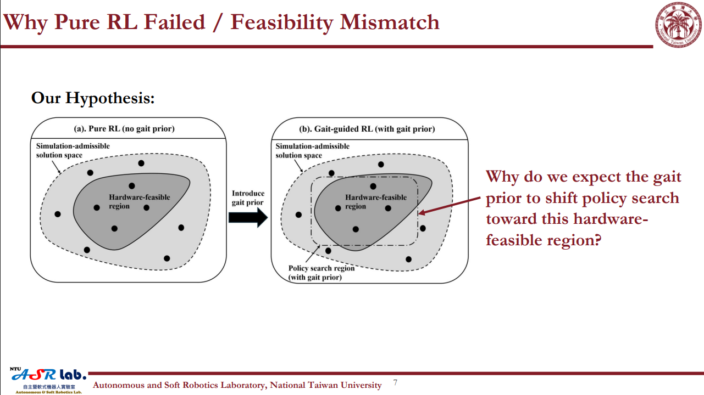
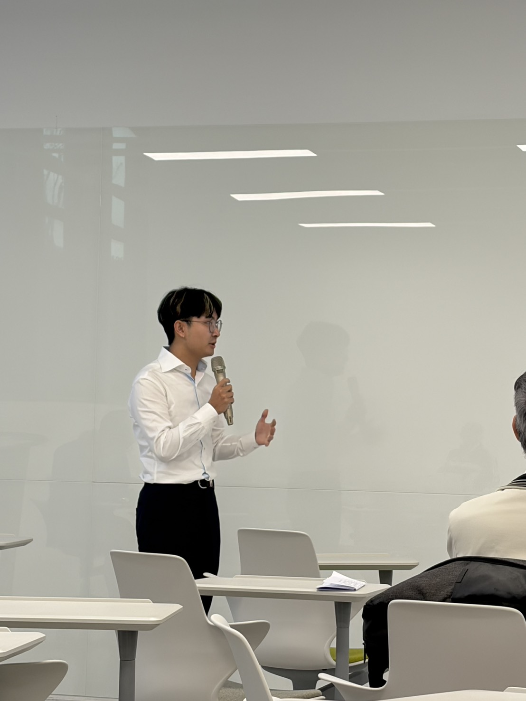
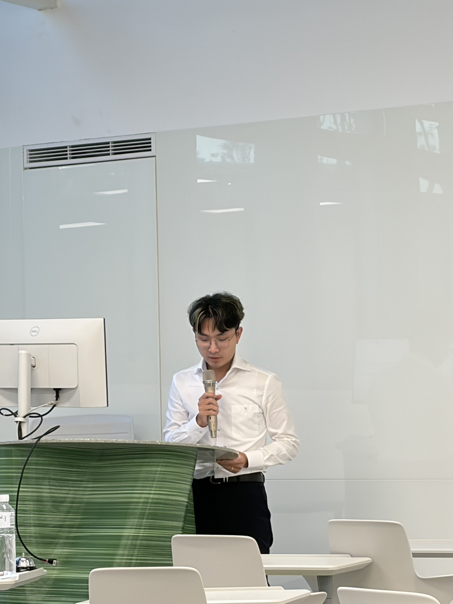

First-Author Research | NTUME ASR Lab | CACS 2026
Gait-Guided Quadruped Sim-to-Real Transfer
First-author research: use a hardware-verified gait prior to turn simulation-valid policies into executable quadruped motion.
- First Author
- English Oral Presentation
- Best Student Paper Award — Honorable Mention
Publication
Sim-to-Real Performance Analysis of a Custom Quadruped Robot Using Gait-Generator-Guided Reinforcement Learning
Cheng-Hsuan Lee, Yi-Cheng Wang, Yu-Hsuan Chi, Yu-Mei Huang, Yu-Cheng Kuo, and Chung-Hsien Kuo.
2026 International Automatic Control Conference (CACS 2026), IEEE conference proceedings.
As first author, I brought the laboratory investigation into a research paper and communicated the method, physical failure evidence, and transfer results through an English oral presentation. The study builds on my hands-on work across actuator hardware, motor control, training records, and sim-to-real debugging.
A policy can walk in simulation and still fail before its first real gait cycle.
The pure-RL controller produced a repeatable simulated gait with a mean swing peak of 7.54 cm. On hardware, front-foot displacement reached only 2.57–3.53 cm before protection; the front-right thigh measured 46.98 A within 0.675 s of command onset. No complete walking cycle formed in the analyzed failure record.
Our interpretation was a feasibility mismatch: simulated task success allowed motions that the real mechanism could not reliably execute. Backlash, drivetrain loss, assembly differences, contact, sensing, and actuator limits narrowed the physical motion region.
Verify physical feasibility before asking the policy to optimize.
We adapted a gait generator to the robot's link dimensions, joint conventions, and inverse kinematics. Direct execution on hardware provided a qualitative feasibility check before the reference was introduced into PPO through joint-position, joint-velocity, and foot-position rewards. Task rewards continued to optimize tracking, stabilization, contact, smoothness, and effort.
- DiagnoseCompare simulated swing, real foot motion, tracking error, and actuator current.
- VerifyExecute the robot-specific gait reference directly on the physical platform.
- Guide learningUse a kinematic motion prior to constrain PPO toward executable trajectories.
- Measure transferEvaluate six hardware recordings using consistent foot, joint, and current metrics.
Repeated hardware trials, with the remaining gap made explicit.
Both gait-guided controllers sustained forward walking in all three recordings per controller. To compare foot motion consistently, we reconstructed simulation and hardware trajectories from joint positions using the same forward-kinematics model.

| Measurement | Guided A | Guided B |
|---|---|---|
| Simulated mean swing peak | 8.63 cm | 8.54 cm |
| Hardware mean swing peak | 7.78 ± 0.06 cm | 7.25 ± 0.45 cm |
| Amplitude retention | 90.0% | 84.9% |
| Phase correlation | 0.980 | 0.990 |
| Hardware joint RMSE | 6.53 ± 1.24° | 6.86 ± 3.57° |
| Hardware current RMS | 8.41 ± 0.65 A | 10.32 ± 1.66 A |
The guided trajectories preserved timing and shape, but lost about 10–15% of their swing amplitude. Body-orientation variability also increased on hardware, and joint tracking and brief current peaks remained concerns. These results motivate drivetrain identification and better state/contact estimation.
Scope: straight, level-ground walking at the tested command. The pure-RL comparison is one recorded failure, not a repeated steady-state baseline; the paper does not claim a formal percentage improvement over pure RL or validated turning and uneven-terrain performance.
From student-paper finalist to Honorable Mention.
The paper was selected as one of 11 finalists for the CACS 2026 Best Student Paper Award and subsequently received an Honorable Mention. I attended the conference in person and delivered the English oral presentation as the paper's first author.

Official conference program · Paper #1275, Best Student Paper Contest.
Presenting the research in person.

